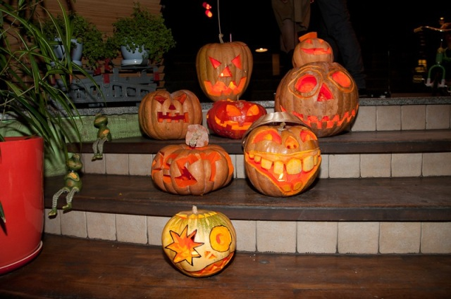
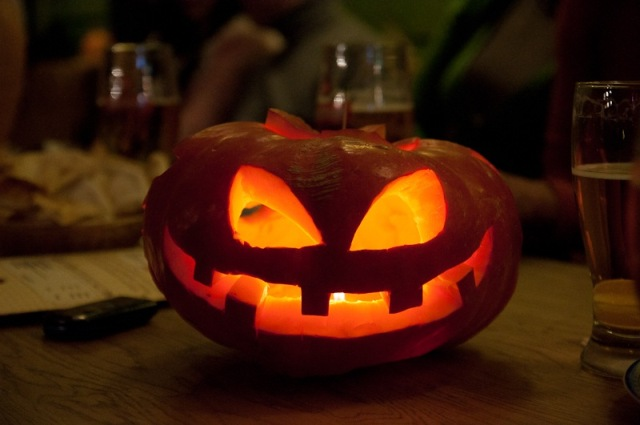
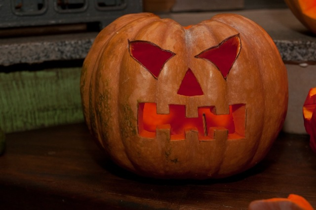

Pumpkins are commonly carved into decorative lanterns called jack-o'-lanterns for the Halloween season in North America. Throughout Britain and Ireland, there is a long tradition of carving lanterns from vegetables, particularly the turnip, mangelwurzel, or swede The practice of carving pumpkins for Halloween originated from an Irish myth about a man name "Stingy Jack".
A pumpkin is a cultivar of the squash plant, most commonly of Cucurbita pepo, that is round, with smooth, slightly ribbed skin, and deep yellow to orange coloration. The thick shell contains the seeds and pulp. Some exceptionally large cultivars of squash with similar appearance have also been derived from Cucurbita maxima. Specific cultivars of winter squash derived from other species, including C. argyrosperma, and C. moschata, are also sometimes called "pumpkin". In New Zealand and Australian English, the term "pumpkin" generally refers to the broader category called winter squash elsewhere.
Pumpkins, like other squash, are native to North America. Pumpkins are widely grown for commercial use, and are used both in food and recreation. Pumpkin pie, for instance, is a traditional part of Thanksgiving meals in the United States, although commercially canned pumpkin puree and pumpkin pie fillings are usually made from different kinds of winter squash than the pumpkins frequently carved as jack-o'-lanterns for decoration around Halloween.
Pumpkins, like other squash, are thought to have originated in North America. The oldest evidence, pumpkin-related seeds dating between 7000 and 5500 BC, were found in Mexico. Since some squash share the same botanical classifications as pumpkins, the names are frequently used interchangeably. One often used botanical classification relies on the characteristics of the stems: pumpkin stems are more rigid, prickly, and angular (with an approximate five-degree angle) than squash stems, which are generally softer, more rounded, and more flared where joined to the fruit.
Traditional C. pepo pumpkins generally weigh between 6 and 18 pounds (2.7 and 8.2 kg), though the largest cultivars (of the species C. maxima) regularly reach weights of over 75 pounds (34 kg). The color of pumpkins is derived from the orange pigments abundant in them. The main nutrients are lutein and both alpha and beta carotene, the latter of which generates vitamin A in the body.
The term "pumpkin" as it applies to winter squash has different meanings depending on variety and vernacular. In many areas, including North America and the United Kingdom, "pumpkin" traditionally refers to only certain round, orange varieties of winter squash, predominantly derived from Cucurbita pepo, while in Australian English, "pumpkin" can refer to winter squash of any appearance. The word pumpkin originates from the word pepon (πέπων), which is Greek for “large melon", something round and large. The French adapted this word to pompon, which the British changed to pumpion and later American colonists changed that to the word that is used today, "pumpkin".
All pumpkins are winter squash: mature fruit of certain species in the genus Cucurbita. Characteristics commonly used to define "pumpkin" include smooth and slightly ribbed skin, and deep yellow to orange color. Circa 2005, white pumpkins had become increasingly popular in the United States. Other colors, including dark green (as with some oilseed pumpkins), also exist. The term “pumpkin” has no agreed upon botanical or scientific meaning, and is used interchangeably with "squash" and "winter squash" in some areas. Pumpkins are grown all around the world for a variety of reasons ranging from agricultural purposes (such as animal feed) to commercial and ornamental sales. Of the seven continents, only Antarctica is unable to produce pumpkins; the biggest international producers of pumpkins include the United States, Canada, Mexico, India, and China. The traditional American pumpkin used for jack-o-lanterns is the Connecticut Field variety.